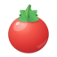
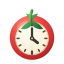
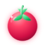
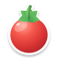
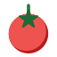
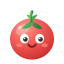

Classic Gloss
Polished sphere, specular highlights, five-leaf calyx. The safe, premium upgrade.

Six directions for the 14 px composer icon. Same 64×64 canvas as the shipped icon.svg. Arrow keys or the buttons switch the gallery theme — the real-size section below always shows both surfaces.
Polished sphere, specular highlights, five-leaf calyx. The safe, premium upgrade.

The tomato becomes the dial: cream clock face, ticks and hands. Most on-message.

Glowing gradient, glass sheen and aura. Made for the dark UI, still OK on light.

Glossy tomato with a white die-cut rim and soft shadow. Reads on light and dark alike.

Hard-edged flat shapes and a star calyx. Poster-like, punchy, very legible tiny.

Blush and a smile. Fun in the dialog, but turns to mush below ~20 px.

Icon is 14 px, label 13/20. This is how each one reads next to the session time.
Files live in pomodoro-timer/design/tomato-alternatives/. Say which one you want and I'll swap it into client.js (the inline TomatoIcon component), icon.svg, and the base64 icon in index.json.